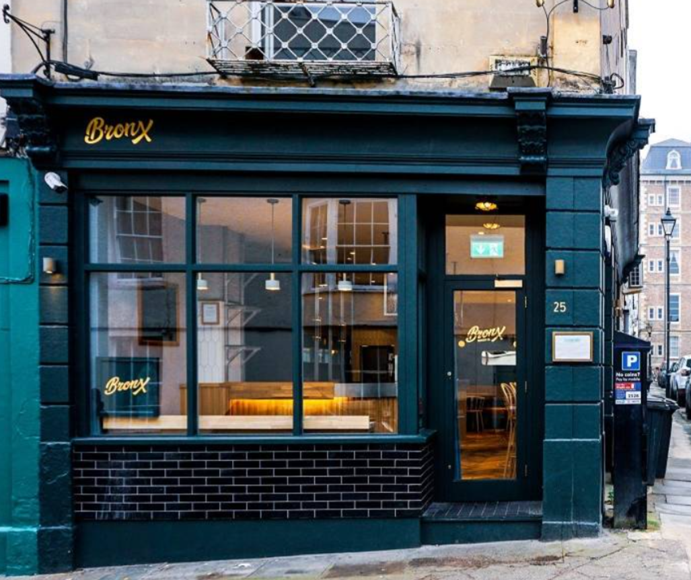

Milk Bun

Milk Bun brings you both the finest ingredients and atmosphere, for a truly unforgettable experience.
Founded in 2018, Milk Bun was was born from two brothers with a passion for good food & good times.
Utilising only the freshest of locally sourced ingredients.
We take great pride in our hand-made, gourmet burgers; sourcing only the finist grass-fed
aged meat, perfectly complemented by our secret signature bun recipe.
Casa Brazil
All YOU CAN EAT BRASILIAN BBQ TAPAS. Sit down relax and order a drink. You will be offered a
variey of unlimited freshy prepared tapas style gourmet salads and traditional Brazilian hot
dishes.
In the evenings you can enjoy our full BBQ that includes 13 different cuts of meat and lunch
BBQ includes 7 different cuts of meat.
Klosterhaus
Located in the iconic Grade-I listed Quakers Friars building in Bristol, Klosterhaus is composed of a
glamorous restaurant, bar, three event spaces and a large outdoor terrace. Serving a range of menus that
showcase Mittel-European cuisine - expect a German twist on some of your favourite classics, including
brunch dishes and even the great British Sunday roast.
4500 miles
Beat the heat with the hottest dishes at 4500 Miles to Delhi, one of liveliest Indian restaurants - oozing
with class, from the décor to the superb cuisine to the fashionable clientele. Classical Indian tradition is
observed and only natural ingredients incorporating fresh herbs and spices will be used in the preparation
of our dishes, in this way you experience Indian food as it was meant to be, free from all artificial
additives, preservatives and food colouring.
Côte Brasserie
The inspiration for the fuss-free French food and the stylish interior comes from the traditional bistros of
Paris. The emphasis is on simply, reasonably priced dishes and the menu includes familiar Gallic favourites
like moules marinières, steak frites with skinny frites, duck confit and the Côte dessert speciality, crème
caramel. Côte is ideal for a quick business lunch, mid-week dinners with friends, and pre-theatre meals. We
guarantee you'll come back time after time.